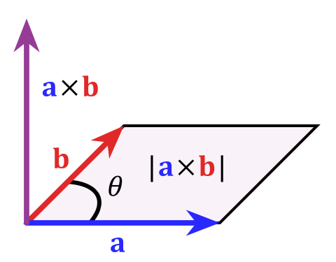
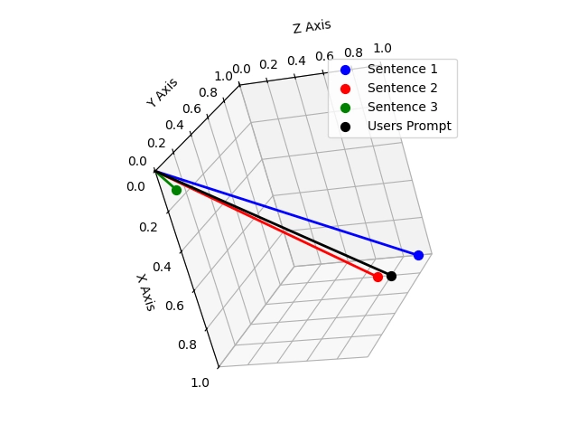
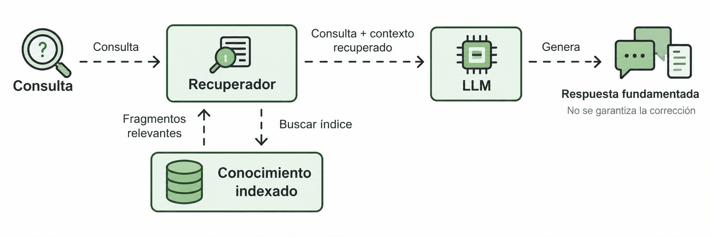

Producto interior, norma, ángulos y aplicaciones
Objetivos de la clase
En esta clase estudiaremos los vectores en \(R^n\) y las operaciones que permiten medir longitudes, ángulos y direcciones. Al finalizar, el estudiante deberá ser capaz de:
- Representar y operar vectores en \(R^2\), \(R^3\) y \(R^n\).
- Calcular e interpretar el producto interior.
- Determinar la norma, el ángulo y los vectores unitarios.
- Calcular la proyección de un vector sobre otro y descomponer ortogonalmente.
- Aplicar el producto cruz en \(R^3\).
- Reconocer estas herramientas en aplicaciones de computación y en RAG.
Vectores en Rn
Un vector en \(R^n\) es una \(n\)-upla ordenada de números reales: \[u=(u_1,u_2,\dots,u_n), \qquad u_i\in R.\] Por lo tanto, \[R^n=\{(u_1,u_2,\dots,u_n): u_i\in R\}.\] Ejemplos:
- \((2,-1)\in R^2\).
- \((1,0,3)\in R^3\).
- \((2,-1,4,0,5)\in R^5\).
Operaciones entre vectores
Sean \(u=(u_1,\dots,u_n)\) y \(v=(v_1,\dots,v_n)\). La suma se define componente a componente: \[u+v=(u_1+v_1,\dots,u_n+v_n),\] y la multiplicación por escalar, con \(\lambda\in R\): \[\lambda u=(\lambda u_1,\dots,\lambda u_n).\]
Clausura
Si \(u,v\in R^n\), entonces \(u+v\in R^n\); y si \(\lambda\in R\), entonces \(\lambda u\in R^n\). Las operaciones producen nuevamente elementos del mismo conjunto. Esta idea será fundamental al estudiar espacios vectoriales.
Aplicaciones
Un vector puede almacenar múltiples cantidades simultáneamente. Por ejemplo, \[x=(x_1,x_2,\dots,x_n)\] puede representar:
- mediciones de sensores;
- velocidades o fuerzas;
- señales discretizadas;
- características de un conjunto de datos;
- estados de un sistema dinámico;
- parámetros de un modelo.
En informática, esta última interpretación es central: un texto, una imagen o un usuario se representan mediante un vector de características o embedding.
Producto interior o producto punto
Sean \(u=(u_1,\dots,u_n)\) y \(v=(v_1,\dots,v_n)\). El producto interior en \(R^n\) se define como \[u\cdot v=u_1v_1+\dots+u_nv_n=\sum_{i=1}^{n}u_i v_i.\] El resultado del producto punto es un número real, no un vector.
Ejemplo
Para \(u=(3,-1,2)\) y \(v=(1,4,-2)\): \[u\cdot v=3(1)+(-1)(4)+2(-2)=3-4-4=-5.\]
Propiedades del producto interior
Para \(u,v,w\in R^n\) y \(\lambda\in R\):
- \(u\cdot v=v\cdot u\) (conmutatividad).
- \(u\cdot(v+w)=u\cdot v+u\cdot w\) (distributividad).
- \((\lambda u)\cdot v=\lambda(u\cdot v)\) (homogeneidad).
- \(u\cdot u\ge 0\), y \(u\cdot u=0 \iff u=0\) (positividad definida).
Ejercicio 1
Sean \[u=(3,1,-2), \qquad v=(2,-3,4).\] Realice cada uno de los siguientes pasos:
- Calcule \(u+v\).
- Calcule \(3u-2v\).
- Calcule \(u\cdot v\).
Suma
\[u+v=(3+2,\,1+(-3),\,-2+4)=(5,-2,2).\]
Combinación lineal
\[3u-2v=3(3,1,-2)-2(2,-3,4)=(9,3,-6)-(4,-6,8)=(5,9,-14).\]
Producto punto
\[u\cdot v=3(2)+1(-3)+(-2)(4)=6-3-8=-5.\]
Ortogonalidad
Dos vectores no nulos son ortogonales si forman un ángulo de \(90^\circ\). Algebraicamente, \[u\perp v \iff u\cdot v=0.\]
Ejemplo
Para \(u=(3,2)\) y \(v=(-2,3)\): \[u\cdot v=3(-2)+2(3)=0,\] por lo tanto \(u\perp v\).
Ejercicio 2
Determine el valor de \(k\) para que \[u=(2,k,1), \qquad v=(1,-3,4)\] sean ortogonales.
Imponemos la condición de ortogonalidad \(u\cdot v=0\): \[u\cdot v=2(1)+k(-3)+1(4)=2-3k+4=6-3k=0.\] Despejamos: \[3k=6 \implies k=2.\]
Norma de un vector
La norma o magnitud de un vector \(u\) se define a partir del producto interior: \[\|u\|=\sqrt{u\cdot u}.\] Si \(u=(u_1,\dots,u_n)\), entonces \[\|u\|=\sqrt{u_1^2+\dots+u_n^2}.\]
Ejemplo
Para \(u=(-2,3,6)\): \[\|u\|=\sqrt{(-2)^2+3^2+6^2}=\sqrt{4+9+36}=\sqrt{49}=7.\]
Propiedades de la norma
Para \(u\in R^n\) y \(\lambda\in R\):
- \(\|u\|\ge 0\).
- \(\|u\|=0 \iff u=0\).
- \(\|\lambda u\|=|\lambda|\,\|u\|\).
- \(\|u+v\|\le \|u\|+\|v\|\) (desigualdad triangular).
La norma mide la longitud del vector y también la distancia entre dos puntos: \(\|u-v\|\).
Vectores unitarios y normalización
Un vector \(u\) es unitario si \(\|u\|=1\). Si \(u\neq 0\), se puede obtener un vector unitario con la misma dirección mediante \[\hat{u}=\dfrac{u}{\|u\|}.\] A este proceso se le llama normalización.
Ejemplo
Para \(u=(5,12)\), su norma es \(\|u\|=\sqrt{5^2+12^2}=13\). Entonces \[\hat{u}=\dfrac{1}{13}(5,12)=\left(\dfrac{5}{13},\dfrac{12}{13}\right).\]
Al normalizar, la dirección y el sentido permanecen iguales; la magnitud se transforma en \(1\).
Ángulo entre dos vectores
Para dos vectores no nulos, \[u\cdot v=\|u\|\,\|v\|\cos\theta.\] Por lo tanto, \[\cos\theta=\dfrac{u\cdot v}{\|u\|\,\|v\|}, \qquad 0\le\theta\le\pi.\]
El signo del producto punto clasifica el ángulo sin calcularlo:
- \(u\cdot v>0 \implies \cos\theta>0 \implies \theta<90^\circ\) (agudo).
- \(u\cdot v=0 \implies \theta=90^\circ\) (recto).
- \(u\cdot v<0 \implies \cos\theta<0 \implies \theta>90^\circ\) (obtuso).
Ejercicio 3
Sean \[u=(2,1,-3), \qquad v=(1,-1,2).\] Sin calcular explícitamente el ángulo, determine si es agudo, recto u obtuso.
Calculamos el producto punto: \[u\cdot v=2(1)+1(-1)+(-3)(2)=2-1-6=-5.\] Como \(u\cdot v<0\), el ángulo es obtuso.
Ejercicio 4
Sean \[u=(2,2,0), \qquad v=(0,3,3).\] Calcule el ángulo entre los vectores.
Calculamos el producto punto y las normas: \[u\cdot v=2(0)+2(3)+0(3)=6,\] \[\|u\|=\sqrt{2^2+2^2+0^2}=2\sqrt{2}, \qquad \|v\|=\sqrt{0^2+3^2+3^2}=3\sqrt{2}.\] Entonces \[\cos\theta=\dfrac{u\cdot v}{\|u\|\|v\|}=\dfrac{6}{(2\sqrt{2})(3\sqrt{2})}=\dfrac{6}{12}=\dfrac{1}{2},\] por lo tanto \[\theta=\arccos\left(\dfrac{1}{2}\right)=60^\circ.\]
Proyección de un vector
La proyección de \(u\) sobre \(v\) representa la componente de \(u\) en la dirección de \(v\).
- Proyección escalar: \(\operatorname{comp}_v u=\dfrac{u\cdot v}{\|v\|}\).
- Proyección vectorial: \(\operatorname{proj}_v u=\dfrac{u\cdot v}{v\cdot v}\,v\).
Ejemplo
Para \(u=(4,3)\) y \(v=(2,-1)\) tenemos \(u\cdot v=5\) y \(v\cdot v=5\), entonces \[\operatorname{proj}_v u=\dfrac{5}{5}(2,-1)=(2,-1).\]
Descomposición ortogonal
Todo vector \(u\) puede descomponerse respecto de una dirección \(v\) como \[u=\operatorname{proj}_v u+(u-\operatorname{proj}_v u).\] La segunda componente es ortogonal a \(v\): \[(u-\operatorname{proj}_v u)\cdot v=0.\]
Esto separa \(u\) en una parte paralela a \(v\) y una parte perpendicular a \(v\).
Ejercicio 5
Sean \[u=(3,5), \qquad v=(1,2).\] Realice cada uno de los siguientes pasos:
- Calcule \(\operatorname{proj}_v u\).
- Determine \(w=u-\operatorname{proj}_v u\).
- Compruebe que \(w\cdot v=0\).
Proyección
Calculamos \(u\cdot v=3(1)+5(2)=13\) y \(v\cdot v=1^2+2^2=5\): \[\operatorname{proj}_v u=\dfrac{13}{5}(1,2)=\left(\dfrac{13}{5},\dfrac{26}{5}\right).\]
Componente ortogonal
\[w=u-\operatorname{proj}_v u=(3,5)-\left(\dfrac{13}{5},\dfrac{26}{5}\right)=\left(\dfrac{2}{5},-\dfrac{1}{5}\right).\]
Comprobación
\[w\cdot v=\dfrac{2}{5}(1)+\left(-\dfrac{1}{5}\right)(2)=\dfrac{2}{5}-\dfrac{2}{5}=0.\]
Producto cruz en R3
El producto cruz se define, en este curso, para vectores de \(R^3\). Sean \(u=(u_1,u_2,u_3)\) y \(v=(v_1,v_2,v_3)\). Se define mediante el determinante simbólico \[u\times v=\begin{vmatrix}\mathbf{i}&\mathbf{j}&\mathbf{k}\\ u_1&u_2&u_3\\ v_1&v_2&v_3\end{vmatrix}.\] Equivalentemente, \[u\times v=(u_2v_3-u_3v_2,\; u_3v_1-u_1v_3,\; u_1v_2-u_2v_1).\] El resultado es un vector de \(R^3\) y cumple \((u\times v)\perp u\) y \((u\times v)\perp v\).
Propiedades del producto cruz
Para \(u,v,w\in R^3\):
- \(u\times v=-(v\times u)\) (anticommutatividad).
- \(u\times u=0\).
- \(u\times(v+w)=u\times v+u\times w\) (distributividad).
- \(u\times v=0\) si y solo si los vectores son paralelos.
Interpretación geométrica del producto cruz
Se cumple que \[\|u\times v\|=\|u\|\,\|v\|\sin\theta.\] Por lo tanto,
- \(A_{\text{paralelogramo}}=\|u\times v\|\), el área del paralelogramo generado por \(u\) y \(v\);
- \(A_{\triangle}=\dfrac{1}{2}\|u\times v\|\), el área del triángulo correspondiente.

Ejemplo
Para \(u=(2,1,0)\) y \(v=(1,-1,3)\): \[u\times v=(3,-6,-3).\] Comprobamos la perpendicularidad: \[(u\times v)\cdot u=3(2)+(-6)(1)+(-3)(0)=0,\] \[(u\times v)\cdot v=3(1)+(-6)(-1)+(-3)(3)=0.\]
Ejercicio 6
Sean \[u=(3,1,-2), \qquad v=(2,-1,1).\] Realice cada uno de los siguientes pasos:
- Calcule \(u\times v\).
- Verifique que el resultado es perpendicular a ambos vectores.
- Determine el área del paralelogramo generado por \(u\) y \(v\).
Producto cruz
\[u\times v=(1(1)-(-2)(-1),\,(-2)(2)-(3)(1),\,(3)(-1)-(1)(2))=(-1,-7,-5).\]
Perpendicularidad
\[(u\times v)\cdot u=(-1)(3)+(-7)(1)+(-5)(-2)=-3-7+10=0,\] \[(u\times v)\cdot v=(-1)(2)+(-7)(-1)+(-5)(1)=-2+7-5=0.\]
Área
\[A=\|u\times v\|=\sqrt{(-1)^2+(-7)^2+(-5)^2}=\sqrt{1+49+25}=\sqrt{75}=5\sqrt{3}\approx 8{,}66.\]
Similitud coseno
En computación, dos elementos se representan mediante vectores (embeddings) y se comparan con el coseno del ángulo entre ellos: \[\text{sim}(u,v)=\cos\theta=\dfrac{u\cdot v}{\|u\|\,\|v\|}=\dfrac{\operatorname{comp}_v u}{\|u\|}.\] Es decir, la similitud coseno es la proyección escalar normalizada. Como \(|\cos\theta|\le 1\), se tiene \(\text{sim}(u,v)\in[-1,1]\):
- valores cercanos a \(1\) indican vectores alineados (muy similares);
- valores cercanos a \(0\), vectores ortogonales (sin relación);
- valores cercanos a \(-1\), vectores opuestos.
Idea clave
Si los vectores están normalizados, \(\|u\|=\|v\|=1\), entonces \(\text{sim}(u,v)=u\cdot v\): basta el producto punto.
Aplicación: búsqueda semántica
La búsqueda tradicional compara palabras exactas. La búsqueda semántica compara significado:
- Cada documento o fragmento se convierte en un embedding, un vector en \(R^n\).
- La consulta del usuario también se convierte en un vector.
- Se calcula la similitud coseno entre la consulta y cada documento.
- Se ordenan los documentos de mayor a menor similitud y se devuelven los primeros.
Esto convierte un problema de lenguaje en un problema geométrico: los vectores cercanos en dirección representan contenidos parecidos. La normalización permite precalcular normas y reducir el costo de cada comparación.
Aplicación: RAG (Retrieval-Augmented Generation)
Un modelo de lenguaje puede “alucinar” cuando responde sin fuentes. RAG combina un recuperador vectorial con un generador:
- Indexación: se divide la base de conocimiento en fragmentos y cada fragmento se codifica como embedding.
- Recuperación: la consulta se codifica y se compara con todos los fragmentos usando similitud coseno; se conservan los \(k\) mejores.
- Aumento: los fragmentos recuperados se insertan en el contexto del prompt.
- Generación: el modelo genera la respuesta a partir de ese contexto.
El paso de recuperación es puramente álgebra lineal: producto interior, norma y coseno. Sin estas operaciones no habría forma de decidir qué documentos son relevantes.



Ejemplo: recuperación por similitud coseno
Supongamos que la consulta es \(q=(1,2,0)\) y que la base contiene tres fragmentos: \[d_1=(2,1,0), \qquad d_2=(0,1,1), \qquad d_3=(1,0,1).\] Calculamos la similitud coseno de \(q\) con cada uno:
- \(\|q\|=\sqrt{5}\).
- Con \(d_1\): \(q\cdot d_1=4\) y \(\|d_1\|=\sqrt{5}\), entonces \(\cos\theta_1=\dfrac{4}{\sqrt{5}\sqrt{5}}=\dfrac{4}{5}=0{,}8\).
- Con \(d_2\): \(q\cdot d_2=2\) y \(\|d_2\|=\sqrt{2}\), entonces \(\cos\theta_2=\dfrac{2}{\sqrt{5}\sqrt{2}}=\dfrac{2}{\sqrt{10}}\approx 0{,}63\).
- Con \(d_3\): \(q\cdot d_3=1\) y \(\|d_3\|=\sqrt{2}\), entonces \(\cos\theta_3=\dfrac{1}{\sqrt{10}}\approx 0{,}32\).
El orden de relevancia es \(d_1>d_2>d_3\).
Si el número de documentos recuperados máximos fuera \(k=2\), el sistema recuperaría \(d_1\) y \(d_2\) para aumentar el prompt.